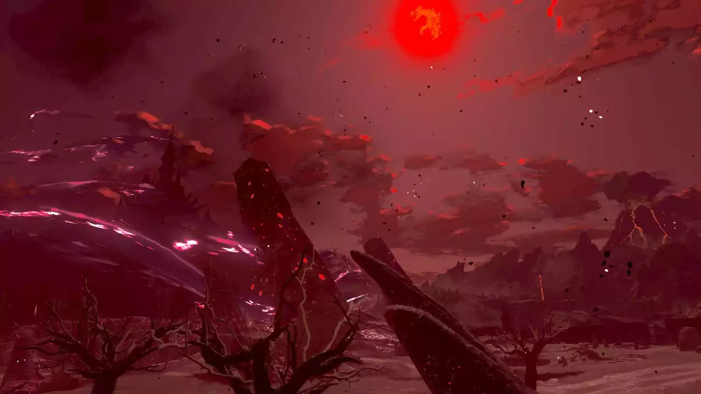
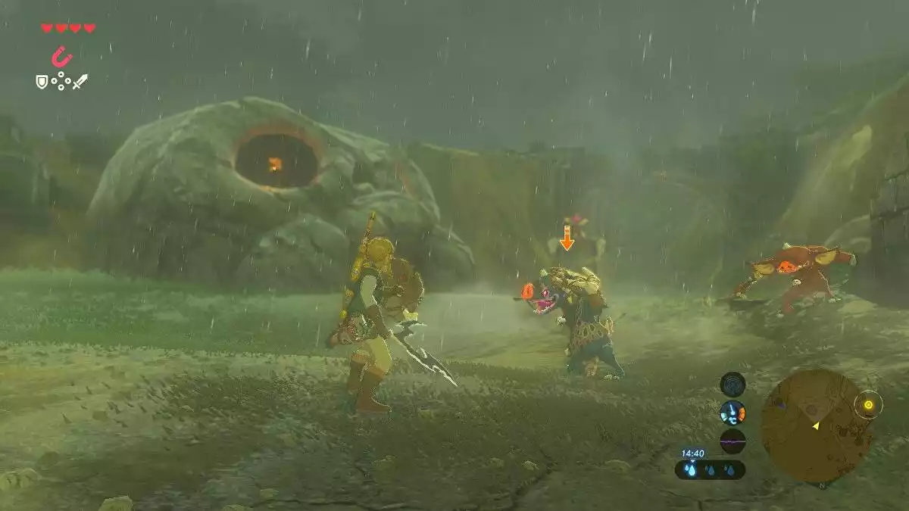

Breath of the Wild, whilst having a quiet soundtrack... the ambient music varies between regions (snowy areas, ruins, death mountain, grass, desert...).
Each town gets it's own theme... which also varies in tempo (and mood) depending on the time of day!
Have some examples!
Additionally, music can warn you of dangers... such as an approaching blood moon...

You think you're hearing things... then you hear THIS. The blood moon is real. This is what schizophrenia feels like...
Hyrule Castle has both an indoor and outdoor theme, along with battle versions of each.
An of course, the battle theme of enemies around the map has multiple build ups, depending on how long the battle lasts.

It's super cool when the tracks fade into each other! It's great!